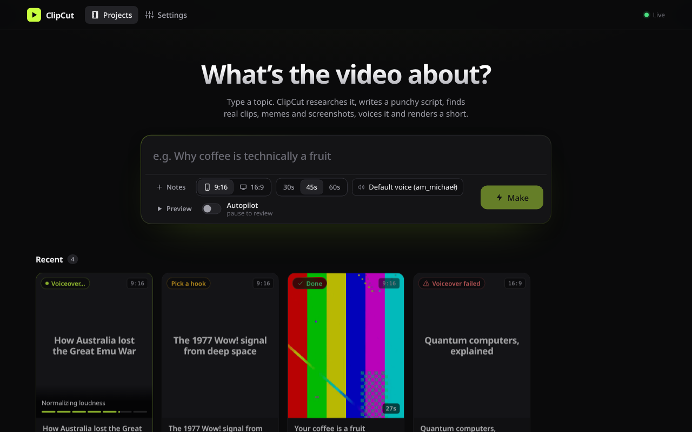
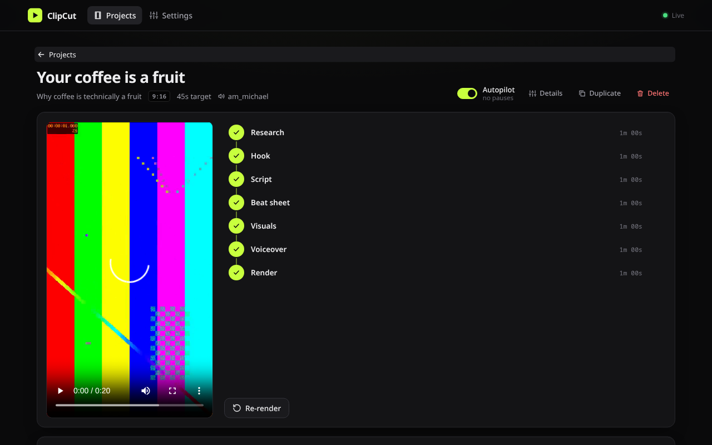

Free · open source · runs on your machine
Topic in.
Short video out.
ClipCut writes a script about anything you type, then cuts a 9:16 or 16:9 video out of 1–3 second YouTube moments, highlighted article screenshots, captioned memes and reaction GIFs, with word-by-word captions and a local AI voiceover.

How it works
- ResearchSearches the web and writes a fact sheet with sources
- HookDrafts opening lines; you pick one
- ScriptWrites the narration and strips the AI-sounding phrases
- Beat sheetSplits it into 1–3 second beats and picks a visual for each
- VisualsFinds the exact YouTube moment, screenshots articles, captions memes
- VoiceoverSpeaks it with Kokoro on your CPU and times every word
- RenderAnimates every cut with a sound effect and encodes the MP4
Review and edit each stage, or turn on Autopilot and come back to a finished
final.mp4 and a credits.txt that lists every source.
Real footage first
Searches YouTube captions for the moment the words are spoken and cuts just those seconds. Stock footage is the last resort.
Free and local
The voice, search and downloads run on your machine. The only account you need is Claude Code, which writes the script.
One binary
A native Rust app with the web UI and fonts built in. Open it on your desktop, or from your phone over Wi-Fi.
Download
The quickest way: one command installs ClipCut and offers to install everything it needs.
curl -fsSL https://github.com/adeebahmad01/clipcut/releases/latest/download/install.sh | sh
Linux and macOS. The script checks the download's SHA-256 and asks before every install. Read it first.
Or download the app directly
Checksums, older versions and release notes are on the
releases page.
On macOS, run xattr -d com.apple.quarantine clipcut once after unpacking a manual download.
What you need
The installer handles these for you. If you'd rather do it by hand, here is each one.
Cuts clips and encodes the video.
Pronunciation for the Kokoro voice.
Writes the research, hooks, script and beat sheet. Run claude once to sign in.
Article screenshots and the app window. Edge and Brave work too.
Lets yt-dlp pass YouTube's player checks. Deno works too.
Runs the unslop skill's checks.
Rewrites the script so it sounds less like AI.
Runs a private SearXNG search. Docker works too. Without it, DuckDuckGo is used.
Downloaded automatically on first start
- yt-dlp ~35 MB
- Kokoro-82M voice model ~205 MB
- SearXNG container, if Podman or Docker is present
Optional free API keys
More GIFs and stock footage with free keys from GIPHY, Tenor, Pexels and Pixabay. Add them in Settings → Keys. Imgflip, Wikimedia, Openverse, Iconify and YouTube need none.
Quick start
curl -fsSL https://github.com/adeebahmad01/clipcut/releases/latest/download/install.sh | shclaudeclipcutOpen the URL it prints. The Network URL works from your phone.
Or from the terminal: clipcut new "Why the Moon is drifting away"

Use footage responsibly. ClipCut takes short clips from YouTube and other public sources
and lists every one in credits.txt. You are responsible for how you use what it makes:
check the terms of the sites you take footage from and the rules of the platform you post to.